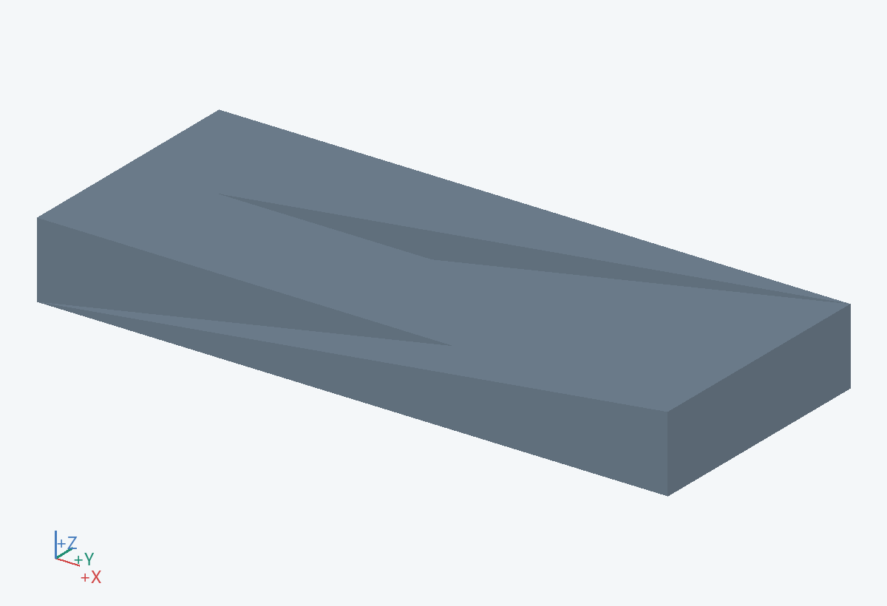
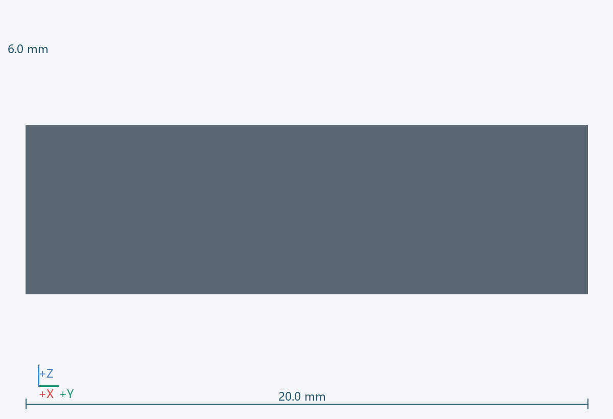
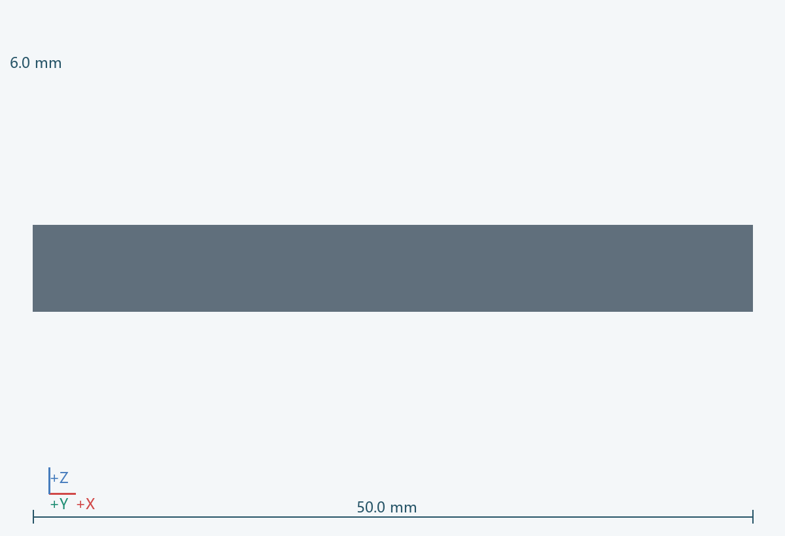

几何包络
50.0 × 20.0 × 6.0 mm（含所示实例）
功能
停机后配合把手短距离移动。
连接 / 基准
安装于底盘后侧；转动、刹车操作和脚尖空间需要一起建模。
材料 / 工艺
非留痕脚轮与金属支架
拆装
卸底盘连接螺栓向外取下。
待验证
核验承重、安装孔型、刹车和支腿展开位置；不将脚轮锁止视为全部稳定措施。 关联：U09
实例
PRT-0105-C__1



50.0 × 20.0 × 6.0 mm（含所示实例）
停机后配合把手短距离移动。
安装于底盘后侧；转动、刹车操作和脚尖空间需要一起建模。
非留痕脚轮与金属支架
卸底盘连接螺栓向外取下。
核验承重、安装孔型、刹车和支腿展开位置；不将脚轮锁止视为全部稳定措施。 关联：U09
PRT-0105-C__1